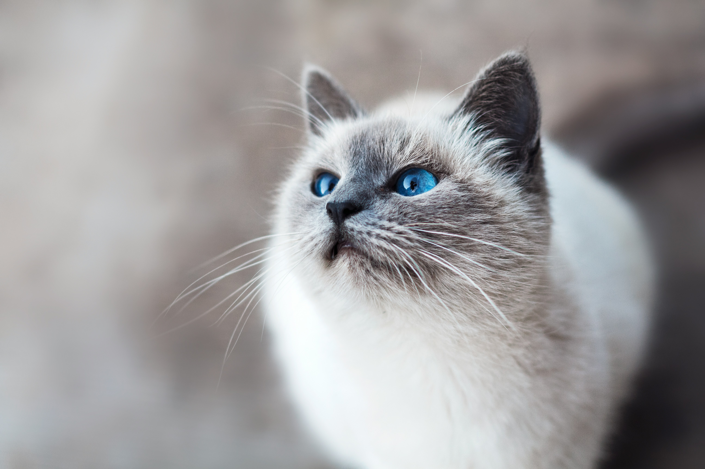

Tudo Sobre Felinos
Um breve resumo
Gato (nome científico: Felis catus) ou gato doméstico é um mamífero carnívoro da família dos felídeos, muito popular como animal de estimação. Ocupando o topo da cadeia alimentar, é predador natural de diversos animais, como roedores, pássaros, lagartixas e alguns insetos. Segundo pesquisas realizadas por instituições norte-americanas, os gatos consistem no segundo animal de estimação mais popular do mundo, estando numericamente atrás apenas dos peixes de aquário. Consta em trigésimo nono na lista das 100 espécies exóticas invasoras mais daninhas do mundo da União Internacional para a Conservação da Natureza (UICN).
Existem atualmente cerca de 250 raças de gatos domésticos. Por apresentarem pesos médios variáveis entre 2,5 a 12 quilos, a espécie é classificada na categoria de animal doméstico de pequeno a médio porte. Assim como ocorre com algumas raças de cães que apresentam esta mesma faixa de peso, o gato doméstico pode viver entre 15 a 20 anos.

Curiosidades
- Em média um gato passa 2/3 do dia a dormir. Isso significa que em 9 anos de vida, apenas está acordado 3 anos!
- As gatas tendem a ser dextras, enquanto os gatos tendem a ser maioritariamente esquerdinos.
- Um gato faz cerca de 100 sons diferentes, enquanto um cão faz cerca de 10.